Kochkiste
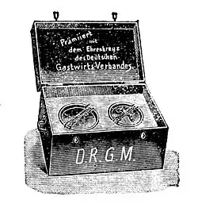
Unter einer Kochkiste versteht man ein wärmedämmend ausgekleidetes Behältnis, in das einzelne Töpfe mit erhitzten Speisen eingestellt werden können, damit diese dann ohne weitere Energiezufuhr, über einen Zeitraum von Stunden, fertig garen. Dank der Wärmedämmung kann eine Kochkiste auch als einfacher Eisschrank genutzt werden.
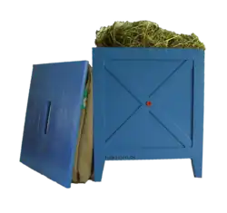
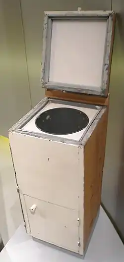
Geschichte
Die Kochkiste verdankt ihre Entstehung und ihre Verbreitung dem gegen Ende des 19. Jahrhunderts verbreiteten Bemühen, breiten Schichten der Bevölkerung Möglichkeiten zu sparsamem Wirtschaften zu zeigen. Sie erleichterte auch die Haushaltsführung berufstätiger Frauen, die morgens die Speisen kurz aufkochen und diese während ihrer Abwesenheit in der Kochkiste fertig garen lassen konnten.[1]
In Zeiten knappen Brenn- und Heizmaterials sicherte die Kochkiste mit einem Minimalverbrauch des Heizmaterials die Zubereitung warmer Speisen, was zu ihrem verstärkten Einsatz in Kriegs(mangel)zeiten führte. So wurde in der Zeit des Ersten Weltkriegs in verschiedenen Kochbüchern die Nutzung der Kochkiste speziell behandelt und ihre Nutzung propagiert.[2][3] Und noch nach dem Zweiten Weltkrieg wurden die Kochkisten z. B. während der Berlin-Blockade genutzt, um mit dem nur nachts kurz verfügbaren Strom Essen anzukochen und bis mittags fertig garen zu lassen.[4]
In der 1926 entworfenen Frankfurter Küche, der auf Arbeitseffizienz ausgerichteten Vorläuferin der modernen Einbauküche, wurde aus arbeitsökonomischen Gründen ebenfalls eine Kochkiste eingeplant.[1]
Heute
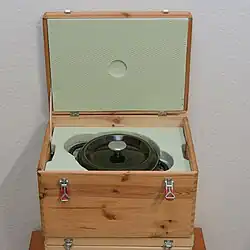
Die Kochkiste wird zunehmend als ökologische und ökonomische Methode der Essenszubereitung eingesetzt. Die langsame Garung ist auch besonders schonend für die Lebensmittel. In jüngerer Zeit wurde die Idee der Kochkiste durch an die Topfformen angepasste Isolationsbehälter neu aufgegriffen.[5][6] Behelfsmäßig reicht auch ein Bananenkarton ausgestopft mit Kissen oder einer Wolldecke. Altbewährt ist die Idee, eine flexible Hülle für den Topf zu benutzen, um eine flexiblere Nutzung von verschiedenen Topfgrößen zu ermöglichen. Früher hat man den Topf einfach ins Bett gestellt. Ein „Kochsack“ ist einfacher zwischenzulagern als eine starre Box.[7]
Konstruktion
Kochkiste
Kochkisten gab es entweder als Eigenbau (aus einem Korb, einer Truhe oder einer Kiste, die mit einer Decke ausgelegt und Zeitungspapier, Stroh, Heu, oder ähnlichem ausgestopft wurde) oder auch seit 1900 industriell hergestellt. Als möglicher Erfinder gilt Karl Drais.[8]
- Konstruktion einer Kochkiste während des Ersten Weltkriegs. Fotos: Marie Goslich
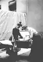
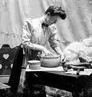
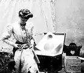
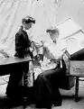
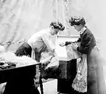
Moderne Kochkisten haben noch immer den gleichen Aufbau. Dabei werden, neben den oben genannten Materialien, häufig moderne Dämmstoffe zur Isolierung verwendet. Neben expandiertem Polystyrol (EPS, Handelsname Styropor), kommen extrudiertes Polystyrol (XPS, Handelsnamen u. a. Austrotherm XPS, Styrodur®, Swisspor XPS), Polypropylen-Schaum (EPP) oder Melaminharzschaum zur Anwendung[9].
Thermotopf
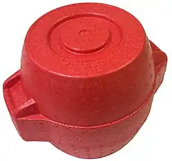
Mittlerweile werden im Handel auch Thermotöpfe angeboten. Dabei handelt es sich um Kochtöpfe, für die eine passende Isolierung angefertigt wurde. Eine stabile Isolierung umschließt den Topf[9][6], Kisten oder andere Behälter sind dabei nicht nötig.
Kochsack
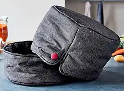
Eine weitere Variante ist der Kochsack. Das Behältnis besteht aus zwei unterschiedlich großen aus Stoff genähten Zylindern. Der Zwischenraum ist mit Dämmmaterial, z. B. Holzwolle gefüllt.[10]
Siehe auch
Literatur
- Kurt Versmolt: Die Kochkiste nebst einer reichen Auswahl dazu passender Speisen. S. Schnurpfeil, Leipzig 1900, LCCN 85-666778, Open Library: OL2670556M
- Kochet in der Kiste! Das Kochbuch für die Kochkiste, aus der Praxis / herausgegeben von einer Landfrau. Verlag von Fr. Bahn, 1904, LCCN 85-666827, Open Library: OL2670604M
- Luise Holle: Die Kochkiste; ein unentbehrliches Hilfsmittel jeder Küche. H. Hillger, Berlin 1907, LCCN 52-057646
- Marie Buchmeier: Neues Kochbuch für kleine Haushaltungen. 3 Personen. 809 Originalrezepte. Jungen Hausfrauen und Köchinnen gewidmet. Josef Habbel, Regensburg ca. 1908, mit einer kleinen Abhandlung zur Kochkiste.
- Ida Schuppli, Betty Hinterer: Grabnerhof-Kochbuch – Mit besonderer Berücksichtigung der Kochkiste – Zum Gebrauche für Hausfrauen des Mittelstandes. Wien 1913.
- Viktoria Löbenberg (Hrsg.): Das deutsche Sparkochbuch für Kriegs- und Friedenszeit mit Gesundheits- und häuslichem Ratgeber. Selbstverlag, München 1916, Die Kochkiste, S. 13–16, urn:nbn:de:bsz:21-dt-52356.
- Ursula Bremm-Gerhards: Chancen solarer Kochkisten als angepasste Technologie in Entwicklungsländern, Fort Lauderdale – Breitenbach, Saarbrücken 1991, ISBN 3-88156-521-3.
Einzelnachweise
- 1 2 Lore Kramer: Rationalisierung des Haushaltes und Frauenfrage – Die Frankfurter Küche und zeitgenössische Kritik ( vom 17. Dezember 2007 im Internet Archive) (S. 6)
- ↑ „Im Interesse der hungernden Bevölkerung – die Gründung des Landkreistages im Ersten Weltkrieg“ ( des vom 21. Oktober 2007 im Internet Archive) Info: Der Archivlink wurde automatisch eingesetzt und noch nicht geprüft. Bitte prüfe Original- und Archivlink gemäß Anleitung und entferne dann diesen Hinweis. (S. 6; PDF; 4,2 MB)
- ↑ Esslinger Ortsgeschichte ( vom 2. Juli 2010 im Internet Archive) (S. 94; PDF; 545 kB)
- ↑ Kochkiste während der Berlinblockade
- ↑ Kochen in der Kiste, Die Zeit, 5. März 1993
- 1 2 Comeback der Kochkiste
- ↑ Informationen über Kochsäcke und eine Bauanleitung.
- ↑ Hans-Erhard Lessing: Automobilität Karl Drais und die unglaublichen Anfänge. Maxime Verlag, 2003, S. 456 ff.
- 1 2 toepfe.org
- ↑ Die Kochkiste und der Kochsack, ihre praktische Benutzung und Anfertigung sowie 25 Rezepte. – Potsdam : Stiftungsverlag, [1910] (Schriften d. Frauenhülfe ; H. 8).
Weblinks
- Gargerät
- Kochen
- Energieeinsparung
- Geschichte (Essen und Trinken)
- Sozialgeschichte
- Geschichte der Wärmetechnik
- Geschichte des Mobiliars